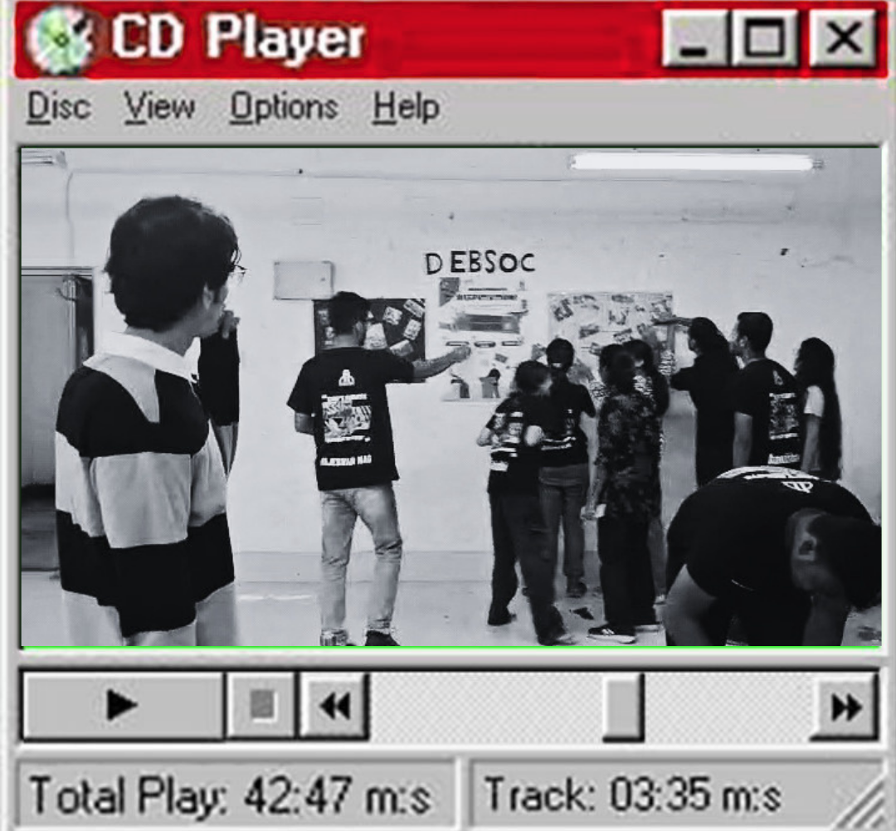
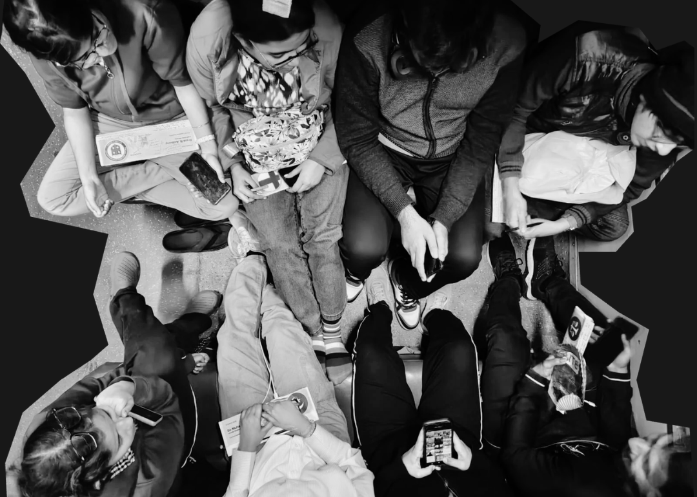
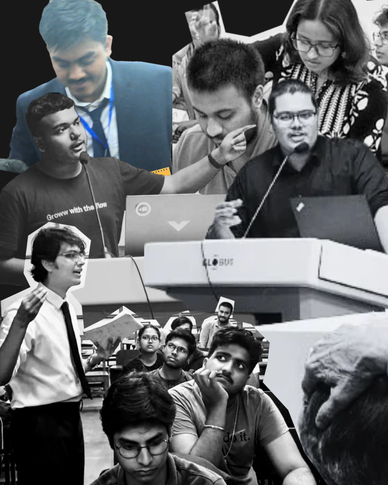
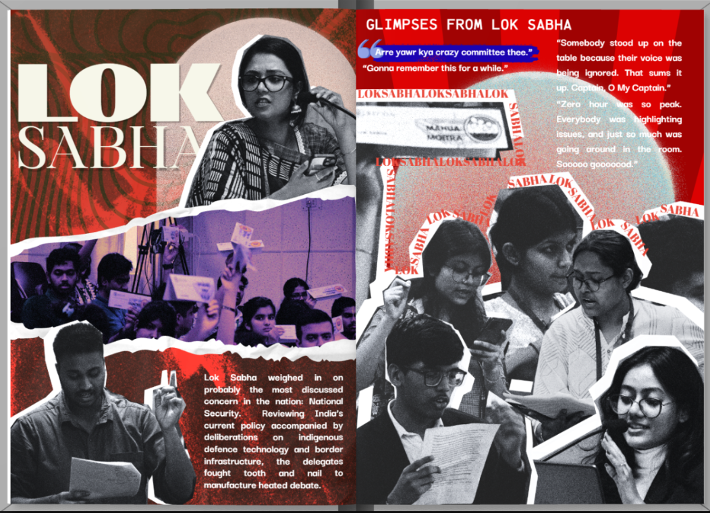
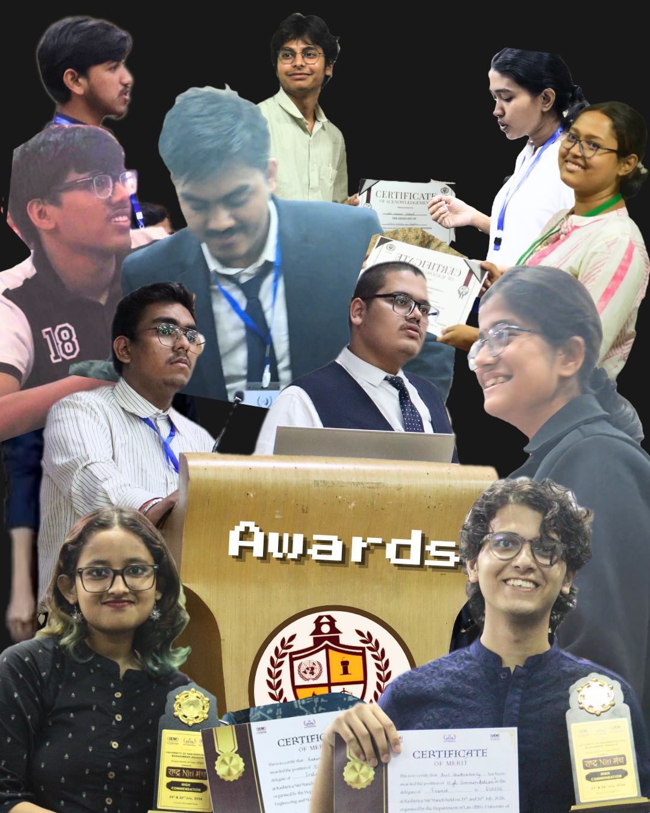

Debating and Model UN at IIEST Shibpur since 2009

Weekly sessions on rhetoric, argumentation and case-building. First years are welcome.
Debating
Society


The Tribunalout now!
Research, current affairs, arguments, and analysis in a publication space built by the society.
Read the Tribunal
Awards
7 Best Speaker and 3 Best Delegation awards at conferences outside IIEST.
IITGMUNIIT KGP GMUNJUMUNBESCAONUEMCON


Gallery
Sessions, conferences and workshops, from the first meeting of the year to BECON. Tap a photo to see it full size.
View the full galleryFAQ
No. Most members join with no formal debate experience. Weekly sessions are structured to bring newcomers up to speed, and the Freshers' Debate is designed for first-timers.
Yes. First years are actively encouraged to join early and build experience before representing IIEST externally.
There is an induction at the start of each academic year. For external competitions and BECON committees, members are selected through internal sessions and trials.
No. DebSoc covers both parliamentary debating and MUN. Members may focus on one, the other, or both.
Weekly during the academic term. Sessions typically run on weekends and last around 90 minutes to two hours.
Yes. BECON is an open conference. Delegates from colleges and universities across India can register through the BECON page.